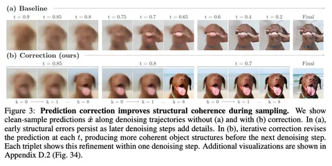

Сегодня разбираем статью, которая собрала немало хайпа. Авторы предлагают перенести идею self-correction из диффузионных языковых моделей в генерацию изображений. Идея простая, но результаты впечатляют. К тому же в работе много интересных абляций.
Основная мотивация — уменьшить exposure bias. Во время обучения денойзер работает с реальными изображениями, к которым добавили шум, а на инференсе — уже с собственными предсказаниями. Из-за этого ошибки могут накапливаться от шага к шагу, что хорошо видно на картинке выше (бейзлайн).
Чтобы решить эту проблему, авторы предлагают добавить к основному денойзеру отдельную модель-корректор:
L_corr = Eₓ,ε,t[||C_φ(sg(x̂⁽⁰⁾), t) − x||₂²]
Интересно, что при обучении корректор можно применять всего единожды, а на инференсе — несколько раз подряд, последовательно уточняя одно и то же предсказание x₀.
Посмотрим на некоторые абляции.
Начнём с того, что немного смущает. Основные эксперименты проводятся с файнтюнингом предобученных DiT, SiT и JiT. Денойзер и корректор инициализируют весами исходной модели, после чего дообучают. Эксперимент с обучением с нуля тоже есть, но хотелось бы увидеть его в большем масштабе.
При этом результаты действительно впечатляют. После 4 млн итераций обучения дальнейший файнтюнинг обычного денойзера почти ничего не меняет, а добавление корректора даёт заметный прирост качества. На картинках видно, что общая композиция часто сохраняется, а детали и структура объектов улучшаются. Особенно заметен прирост в unconditional-генерации. В text-to-image метод тоже работает, причём как с CFG, так и без него.
Авторы также проверяют коррекцию с общими весами денойзера и корректора, чтобы показать, что улучшения связаны именно с процедурой, а не просто с увеличением числа параметров.
Ещё одна интересная абляция — количество коррекций на трейне и инференсе. При одном шаге на обучении оптимально около трёх шагов коррекции на инференсе, после чего качество начинает ухудшаться. Если обучать с двумя, тремя или четырьмя шагами, оптимум смещается примерно к четырём, шести и восьми соответственно.
Также авторы смотрят, на каких этапах генерации лучше применять коррекцию. Для JiT наибольший эффект дают ранние шаги, когда шума ещё много. Возможно, дело в том, что исправление ранних предсказаний x₀ помогает избежать накопления ошибок на последующих шагах.
Пожалуй, самое интересное в этой работе — не столько возможность исправлять предсказания денойзера, а то, что одну и ту же процедуру можно применять многократно, даже если модель обучалась на меньшем числе коррекций.
По сути, авторы показывают ещё один способ использовать дополнительные вычисления на инференсе: не делать больше шагов денойзинга, а несколько раз уточнять уже полученное предсказание.
При этом остаются вопросы, почему такая итеративная коррекция работает настолько хорошо и эффективен ли метод при обучении с нуля. Но сама идея выглядит перспективно. Возможно, для улучшения диффузионных моделей не всегда нужно усложнять денойзер — иногда достаточно научить его исправлять собственные ошибки.
Разбор подготовил
CV Time
